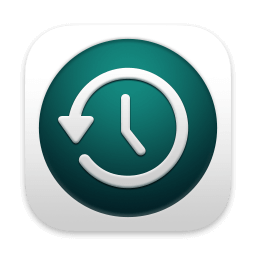
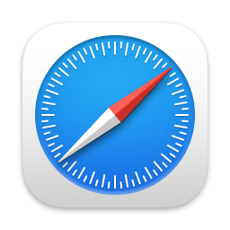

从时间机器恢复
如果您有想要恢复的系统备份。

安装 macOS Tahoe
使用随附的安装器来升级或安装 macOS。

Safari 浏览器
浏览 Apple 支持以获取适用于 Mac 的帮助。
磁盘工具
使用 “磁盘工具” 修复或抹掉磁盘。
恢复
文件
编辑
实用工具
窗口

从时间机器恢复
如果您有想要恢复的系统备份。
安装 macOS Tahoe
使用随附的安装器来升级或安装 macOS。

Safari 浏览器
浏览 Apple 支持以获取适用于 Mac 的帮助。
磁盘工具
使用 “磁盘工具” 修复或抹掉磁盘。